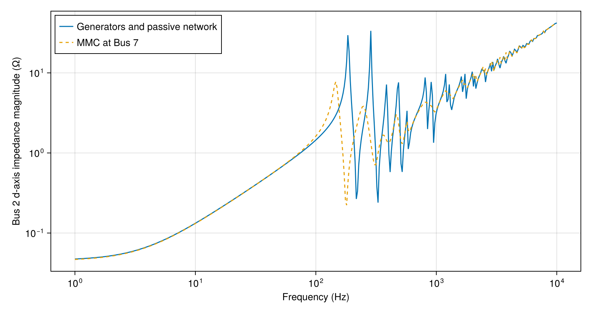

IEEE9 bus impedance
The generators connect to a 230 kV network through step-up transformers. Overhead lines form the ring 4, 5, 7, 8, 9, 6, 4, with loads at buses 5, 6 and 8. The impedance at Bus 2 combines transformer leakage inductance, line inductance, line charging capacitance and transformer capacitance.
using PowerImpedance
using CairoMakieLines, transformers and loads
Each phase conductor has a 15 mm radius and a DC resistance of 0.063 ohms per kilometre. The flat arrangement has 10 m phase spacing, 30 m suspension height and 10 m sag. Ground wires and 100 ohm metre soil complete the earth-return inputs shared by all six lines.
conductors = Conductors(
organization = :flat, nᵇ = 3, nˢᵇ = 1, Rᵈᶜ = 0.063, rᶜ = 0.015,
yᵇᶜ = 30, Δyᵇᶜ = 0, Δxᵇᶜ = 10, Δ̃xᵇᶜ = 0, dˢᵇ = 0, dˢᵃᵍ = 10
);
groundwires = Groundwires(
nᵍ = 2, Rᵍᵈᶜ = 0.92, rᵍ = 0.0062,
Δxᵍ = 6.5, Δyᵍ = 7.5, dᵍˢᵃᵍ = 10
);
elements = (
g1 = ac_source(v = 16.5 * sqrt(2/3)),
g2 = ac_source(v = 18 * sqrt(2/3)),
g3 = ac_source(v = 13.8 * sqrt(2/3)),
tl78 = overhead_line(length = 76e3, conductors = conductors, groundwires = groundwires,
earth_parameters = (1, 1, 100)),
tl89 = overhead_line(
length = 106e3, conductors = conductors, groundwires = groundwires,
earth_parameters = (1, 1, 100)),
tl75 = overhead_line(
length = 170e3, conductors = conductors, groundwires = groundwires,
earth_parameters = (1, 1, 100)),
tl96 = overhead_line(
length = 179e3, conductors = conductors, groundwires = groundwires,
earth_parameters = (1, 1, 100)),
tl54 = overhead_line(length = 89e3, conductors = conductors, groundwires = groundwires,
earth_parameters = (1, 1, 100)),
tl64 = overhead_line(length = 97e3, conductors = conductors, groundwires = groundwires,
earth_parameters = (1, 1, 100)),
t1 = transformer(
n = 16.5/230, Lₚ = 4.9916e-4/2, Lₛ = 0.097/2, Rₚ = 0, Rₛ = 0,
V₁ᵒ = 16.5e3/sqrt(3), V₂ᵒ = 230e3/sqrt(3),
Cₜ = 7e-9, Cₛ = 12e-9, conductors = 3
),
t2 = transformer(
n = 18/230, Lₚ = 6.4458e-4/2, Lₛ = 0.1052/2, Rₚ = 0, Rₛ = 0,
V₁ᵒ = 18e3/sqrt(3), V₂ᵒ = 230e3/sqrt(3),
Cₜ = 7e-9, Cₛ = 12e-9, conductors = 3
),
t3 = transformer(
n = 13.8/230, Lₚ = 3.5523e-4/2, Lₛ = 0.0987/2, Rₚ = 0, Rₛ = 0,
V₁ᵒ = 13.8e3/sqrt(3), V₂ᵒ = 230e3/sqrt(3),
Cₜ = 7e-9, Cₛ = 12e-9, conductors = 3
),
l5 = impedance(z = s -> 1269.6 + 10.1s, conductors = 3),
l6 = impedance(z = s -> 1763.3 + 16.84s, conductors = 3),
l8 = impedance(z = s -> 1587.16 + 14.43s, conductors = 3)
);The transformer turns ratios connect the 16.5, 18 and 13.8 kV generator buses to the transmission network. Each transformer includes winding leakage inductances and 7 nF and 12 nF capacitance inputs. The loads use z = s -> R + L*s, with resistance in ohms and inductance in henries.
connections = (
NetworkBuilder.Bus(:Bus1; ports = ((:g1, :ac), (:t1, :side1)), domain = ACDQ),
NetworkBuilder.Bus(:Bus4; ports = ((:t1, :side2), (:tl64, :side1), (:tl54, :side1)),
domain = ACDQ),
NetworkBuilder.Bus(:Bus6; ports = ((:tl64, :side2), (:l6, :side1), (:tl96, :side1)),
domain = ACDQ),
NetworkBuilder.Bus(:gnd; ports = ((:l6, :side2), (:l5, :side2), (:l8, :side2)),
domain = ACDQ),
NetworkBuilder.Bus(:Bus5; ports = ((:tl54, :side2), (:l5, :side1), (:tl75, :side1)),
domain = ACDQ),
NetworkBuilder.Bus(:Bus9; ports = ((:tl96, :side2), (:tl89, :side1), (:t3, :side2)),
domain = ACDQ),
NetworkBuilder.Bus(:Bus7; ports = ((:tl75, :side2), (:tl78, :side1), (:t2, :side2)),
domain = ACDQ),
NetworkBuilder.Bus(:Bus8; ports = ((:tl78, :side2), (:tl89, :side2), (:l8, :side1)),
domain = ACDQ),
NetworkBuilder.Bus(:Bus2; ports = ((:t2, :side1), (:g2, :ac)), domain = ACDQ),
NetworkBuilder.Bus(:Bus3; ports = ((:t3, :side1), (:g3, :ac)), domain = ACDQ)
);
network = NetworkBuilder.define(elements, connections; exclude = (:g2,));[ Info: Excluded elements: (:g2,).Looking into Bus 2
Excluding g2 exposes the impedance seen at Bus 2. The ideal sources at buses 1 and 3 act as shorts for voltage perturbations. The ACDQ buses represent the three-phase components in d and q coordinates.
grid_response = compute(
PowerImpedanceProblem(
network; nodes = [:Bus2d, :Bus2q],
frequency_range = (1.0, 1e4, 400)
),
NodalImpedance()
);Line inductance and the leakage inductances of t1 and t3 connect the ring to the ideal sources. Their interaction with the line charging capacitances produces its resonances. Transformer t2 adds leakage inductance between Bus 2 and the ring. The transformer capacitances and wave propagation add further peaks and dips, while load and conductor resistance damp them.
The MMC at Bus 7
The MMC has 400 submodules per arm, 10 mF submodule capacitance and 50 mH arm inductance. The current PI gains follow from loop bandwidths and damping ratio 0.7, then convert with the corresponding per-unit impedance bases.
electrical = ElectricalMMC(Lₐᵣₘ = 50e-3, Rₐᵣₘ = 1.07, Cₐᵣₘ = 10e-3, N = 400, Lᵣ = 60e-3,
Rᵣ = 0.535, turnsRatio = 1);
converter_bases = BaseValues(S = 1000, v_ac = 230 * sqrt(2/3),
v_dc = 640, omega = 100π);
dc_impedance_base = 640^2 / 1000;
ac_current_base = 2 * 1000e6 / (3 * converter_bases.v_ac * 1e3);
energy_scale = 3 * 10e-3 * (640e3)^2 / (400 * 1000e6);
ac_current_pi = PIControl(
Kp = (2 * 0.7 * 1000 * 0.085 - 1.07) / PowerImpedance.perunit(electrical,
converter_bases).zAC_base,
Ki = 0.085 * 1000^2 / PowerImpedance.perunit(electrical, converter_bases).zAC_base
);
internal_current_pi = PIControl(
Kp = (2 * 0.7 * 300 * 50e-3 - 1.07) / dc_impedance_base,
Ki = 50e-3 * 300^2 / dc_impedance_base
);The outer active-power loop sets the d-axis current reference from the power error. The inner AC current loop adjusts converter voltage to drive the current towards its reference.
delta_control = ΔdqControlGFL(
outer_active = OuterActivePowerControl(pi_ctrl = PIControl(
Kp = 2.0020e-7 * 1000e6 / ac_current_base,
Ki = 1.0010e-4 * 1000e6 / ac_current_base
)),
outer_reactive = NoOuterReactiveControl(),
occ = InnerCurrentPIControl(pi_ctrl = ac_current_pi,
activate_ω_c_multiplication = false)
);Total energy control regulates the energy in the arm capacitors through a zero-sequence current reference. Zero-sequence current control regulates the DC-side current. Circulating current suppression controls the second-harmonic current between the arms.
sigma_control = ΣdqzControlTEC(
tec = TotalEnergyControl(
pi_control = PIControl(
Kp = 120 * energy_scale, Ki = 400 * energy_scale
),
ref = 3072e4 / (3 * 10e-3 * (640e3)^2 / 400)),
zscc = ZeroSequenceCurrentControl(internal_current_pi),
ccsc = CirculatingCurrentSuppressionControl(internal_current_pi)
);NoSynchronization supplies the ideal grid angle with no PLL dynamics in the impedance. Modulation sets commands for submodule insertion from voltage references and represents the 150 us delay with a 3/3 Padé approximation.
converter_elements = merge(elements,
(
c1 = let model = mmc(vACbase_LL_RMS = 230, Sbase = 1000, vDC_base = 640,
elec = electrical, meas = Measurement(), sync = NoSynchronization(),
delta_control = delta_control, sigma_control = sigma_control,
modulation = UncompensatedModulation(
timeDelay = 150e-6, padeOrderNum = 3, padeOrderDen = 3
),
limits = PowerImpedance.Limits(P_min = -1500, P_max = 1500, Q_min = -500,
Q_max = 500))
b = bases(model)
component(model; delta_control = (outer_active = (p_ref = 100 / b.S,),),
powerflow = (; v_dc = 640 / b.v_dc,
q_ac = 0 / b.S,
v_ac = (230 * sqrt(2/3)) / b.v_ac,
p_dc = -100 / b.S))
end,
dc = dc_source(v = 640)
));
converter_connections = (connections...,
NetworkBuilder.Bus(:dc; ports = ((:dc, :dc), (:c1, :dc))),
NetworkBuilder.Bus(:Bus7; ports = ((:c1, :ac),), domain = ACDQ)
);The power flow includes g2 at Bus 2 and uses the nominal bus voltage limits. Opening g2 then exposes the impedance at the calculated operating point. The 640 kV DC source fixes the converter's DC voltage during the scan.
converter_network = NetworkBuilder.define(converter_elements, converter_connections;
options = (;
voltageBase = 230 / sqrt(3), power_flow = (; is_bounded = (; bus_voltage = true))));
power_flow = compute(PowerFlowProblem(converter_network), ACDCPowerFlow());
probe_network = NetworkBuilder.define(converter_elements, converter_connections;
exclude = (:g2,), options = converter_network.options);
linearized = compute(LinearizationProblem(probe_network, power_flow),
AdmittanceLinearization());
converter_response = compute(
PowerImpedanceProblem(
linearized.network_model; nodes = [:Bus2d, :Bus2q], frequency_range = (
1.0, 1e4, 400)
),
NodalImpedance());[ Info: LOCALLY_SOLVED
[ Info: Power flow converged successfully.
[ Info: Terminal operating values: Dict{Symbol, NamedTuple}(:dc => (dc = DCPortValues(640.0, -100.19675759498615),), :g3 => (ac = ACPortValues(11.267652816802618, -2.956302464634407e-32, 15.205090030026367, 22.23533156188685),), :g2 => (ac = ACPortValues(14.696938456699067, 2.2340787354891936e-31, 61.09815477251827, 21.091538516406157),), :g1 => (ac = ACPortValues(13.472193585307478, 6.914088500350177e-32, 10.352290910746694, 21.146162374345923),), :c1 => (ac = ACPortValues(190.40594607923765, 0.0376645289720384, -100.0, 1.5613036794249157e-28), dc = DCPortValues(640.0, 100.19675759498615)))
[ Info: Excluded elements: (:g2,).
[ Info: Starting to solve for steady-state solution
[ Info: MMC steady-state solution found!With the MMC, the first peak moves from about 185 to 146 Hz and falls from 30 to 8 ohms. The second moves from about 286 to 249 Hz and falls from 34 to 4 ohms. The current-controlled MMC adds a frequency-dependent admittance in parallel at Bus 7 and changes the perturbation current and impedance seen through t2.
comparison = Figure(size = (850, 450));
axis = Axis(comparison[1, 1]; xlabel = "Frequency (Hz)",
ylabel = "Bus 2 d-axis impedance magnitude (Ω)", xscale = log10, yscale = log10);
lines!(axis, real.(grid_response.frequencies) ./ (2π),
abs.(grid_response.response[1, 1, :]); label = "Generators and passive network");
lines!(axis, real.(converter_response.frequencies) ./ (2π),
abs.(converter_response.response[1, 1, :]); label = "MMC at Bus 7", linestyle = :dash);
axislegend(axis; position = :lt);
comparison
Back to Examples